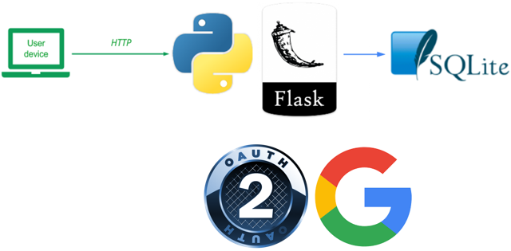
In the previous versions of the Guestbook, clients provided their own names and e-mail addresses when submitting entries. It is often the case that an application wants to ensure its users are authenticated before allowing access. Modern web applications typically leverage OAuth2 and third-party identity providers to perform the authentication.
In this version, we augment our earlier sqlite3 Guestbook implementation with OAuth2. Rather than having users fill in their name and e-mail addresses, we will instead use OAuth2 and a third-party identity provider (e.g. Google) to obtain a user's information that will be attached to the Guestbook entry.
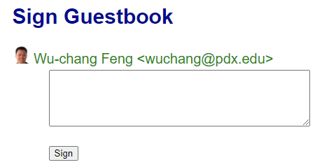
OAuth2 supports several types of flows to support authentication. There are 3 main parties in any OAuth2 flow.
For this particular application, and for many web applications, OAuth2's Authorization Code flow is often used. Before going on-line, the Guestbook client web application first needs to be registered on the identity provider to establish a Client ID and a Client Secret so that they can securely exchange data. In addition, the web application sets a Callback URL on the identity provider that is used to redirect a User back to the web application after authentication.
The figure below shows how the application works with OAuth2.
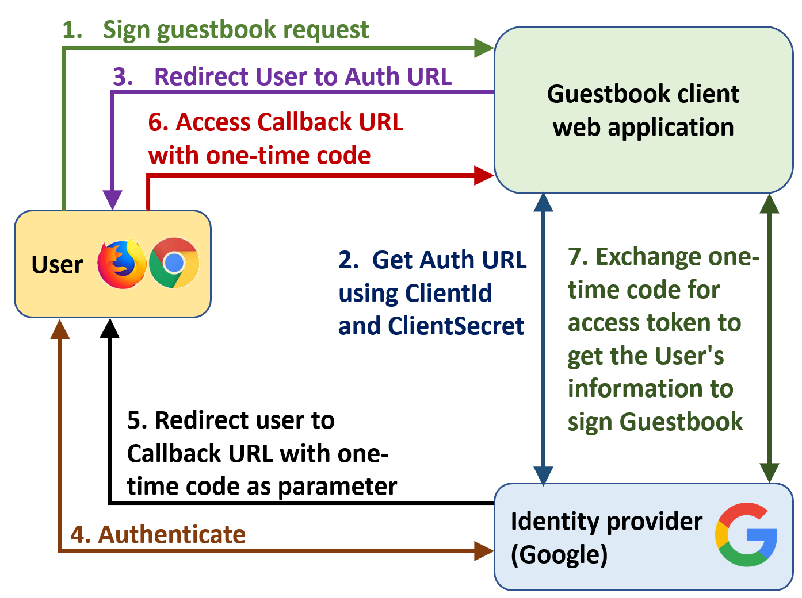
In your Linux VM, clone the source code and change into its directory
git clone https://github.com/wu4f/cs430-src cd cs430-src/07_oauth
An edited directory structure is shown below that includes the files changed to support the new OAuth functionality. The modifications include the addition of code to support new routes (callback.py , logout.py) and a configuration file (oauth_config.py). Files for rendering (index.py, index.html) and signing the Guestbook (sign.py, sign.html) as well as code to store profile picture URLs (__init__.py, model_datastore.py) have also been modified to support OAuth-based signing.
07_oauth
├── app.py
├── index.py
├── sign.py
├── callback.py
├── logout.py
├── oauth_config.py
├── requirements.txt
├── Dockerfile
├── gbmodel
│ ├── __init__.py
│ ├── Model.py
│ └── model_datastore.py
└── templates
├── index.html
└── sign.html
The OAuth implementation contains a configuration file shown below that reads in the environment variables set in the shell and contains the predefined URLs that Google uses for its identity provider endpoints.
import os
client_id = os.environ.get('CLIENT_ID')
client_secret = os.environ.get('CLIENT_SECRET')
redirect_callback = os.environ.get('REDIRECT_CALLBACK')
authorization_base_url = 'https://accounts.google.com/o/oauth2/auth'
token_url = 'https://accounts.google.com/o/oauth2/token'We will use OAuth in our Guestbook application to support authenticated signing. We leverage the requests_oauthlib Python package which provides a simple interface to OAuth via its OAuth2Session class. If a User visits the page to sign the Guestbook without a session token (Step 1 in our figure), the code below is executed.
from oauth_config import client_id, authorization_base_url, redirect_callback
...
# If OAuth token not present, start OAuth flow
google = OAuth2Session(
client_id,
redirect_uri = redirect_callback,
scope = 'https://www.googleapis.com/auth/userinfo.email ' +
'https://www.googleapis.com/auth/userinfo.profile'
)The code initiates the OAuth authorization code flow with Google by instantiating an OAuth2Session instance with our configured client_id. Two keyword parameters must be included: the Redirect URL (redirect_uri) we want Google to return the User to in our application after they have authenticated and given consent (e.g. the Callback URL previously described) and the scope of the information our application wants from Google for the User. In this case, we care about the e-mail address (userinfo.email) as well as the name and profile picture URL (userinfo.profile). Hidden from the code, but generated by the OAuth2Session method, is a random "state" parameter. This parameter serves as a form of CSRF token for the client application that makes sure that subsequent OAuth interactions are from the same person who initiated the OAuth flow. The parameter must be echoed back by the identity provider and checked at each step.
authorization_url, state = google.authorization_url(authorization_base_url, prompt='login')
session['oauth_state'] = state
return redirect(authorization_url)Using this session, we retrieve the Authorization URL from Google (Step 2) along with the state parameter that has been echoed back. The parameter is then stored in our session for subsequent use. Finally, the application code redirects the User to the Authorization URL (Step 3), which will take the User to the next step of the process. An example of a redirection is shown below with all of the parameters shown:
https://accounts.google.com/o/oauth2/auth?response_type=code&client_id=923299464850-3pld8t3k4pjrgc39i1bguof5t0u5gk59.apps.googleusercontent.com&redirect_uri=https%3A%2F%2Fgcp-oauth-...run.app%3A8000%2Fcallback&scope=https%3A%2F%2Fwww.googleapis.com%2Fauth%2Fuserinfo.email+https%3A%2F%2Fwww.googleapis.com%2Fauth%2Fuserinfo.profile&state=s2Cmzbl5ECeXhNhNN2FgpOxpTNbppP
The User is redirected to an Authorization URL on Google (Step 4) so that they can explicitly consent to allow access to the information the Guestbook wants from their account. If they are not logged in, Google will first force them to authenticate and consent to allow access. An example is shown below:
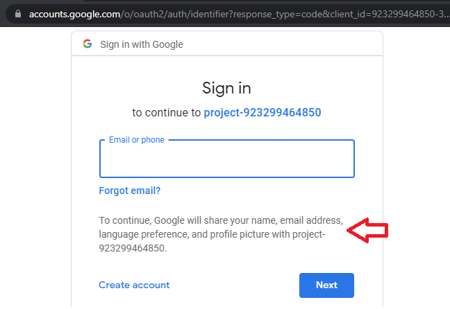
Once the User has authenticated and given consent, Google will then redirect them back to the Guestbook application, using the Redirect/Callback URL described earlier (Step 5). In this case, we will need to fill this in based on the URL our Cloud Run service is deployed at. This will eventually have the format of https://...run.app/callback. It is important to note that giving consent to an application allows it to access this information from your account until you explicitly remove it. Malicious OAuth applications can use this to obtain persistent access to your information.
As a result of the redirection from Google, the User visits the Callback URL using the parameters that Google has attached (Step 6). In OAuth's authorization code flow, Google provides several URL parameters including the state parameter, a one-time authorization code, and the scope of access requested. An example of this redirection is shown below.
https://...run.app/callback?state=ZHS7e...XB&code=40AX...cA&scope=email+profile...
The Guestbook application must handle this callback by taking the request and using it to prove to the identity provider they are now authorized to access the User's identity information. The identity provider will then provide an OAuth token that can then be used subsequently. Note, that the Callback URL must be served over https.
To add the callback to our application, we add the route as shown below:
from callback import Callback
...
app.add_url_rule('/callback',
view_func=Callback.as_view('callback'),
methods=["GET"])
...The main logic for handling the Callback redirection is below. When receiving the Callback request, the OAuth2Session is re-established using the client_id, redirect_uri, and state information received from the initial steps. Using the client_secret and the URL request we then fetch a token from the token endpoint URL defined for Google (e.g. token_url). This will then return an OAuth token (Step 7) that can then be used in subsequent requests. The application saves this token within the User's session cookie so that it can be retrieved when needed. Finally, the User is redirected back to the original signing page, but this time, with an OAuth token set.
from flask import redirect, request, url_for, session
from requests_oauthlib import OAuth2Session
from flask.views import MethodView
from oauth_config import client_id, client_secret, token_url, redirect_callback
class Callback(MethodView):
def get(self):
google = OAuth2Session(client_id, redirect_uri = redirect_callback, state=session['oauth_state'])
# Ensure only HTTPS is utilized
request.url = request.url.replace('http:','https:')
# Fetch token from Google's token issuer
token = google.fetch_token(token_url,
client_secret=client_secret,
authorization_response=request.url)
# At this point you can fetch protected resources but lets save
# the token and show how this is done from a persisted token
session['oauth_token'] = token
return redirect(url_for('sign'))The Callback code again redirects the User. This time, the redirection takes the User back to the signing page that started the OAuth process initially. Unlike our initial visit, however, we now have the OAuth token in our session. As a result, the application can now pull our identity information from Google using the token, pull out the name, email, and profile picture fields from it, then use it to render the signing page.
class Sign(MethodView):
def get(self):
if 'oauth_token' in session:
google = OAuth2Session(client_id, token=session['oauth_token'])
userinfo = google.get('https://www.googleapis.com/oauth2/v3/userinfo').json()
return render_template('sign.html', name=userinfo['name'], email=userinfo['email'], picture=userinfo['picture'])The template used to render the page is then modified to support these new fields while populating them in hidden form fields so that they are included in a subsequent POST request when the User submits a message.
{% block content %}
<h2>Sign Guestbook</h2>
<img src="{{ picture }}" width=25px height=25px>
{{ name }} <{{ email }}>
<form action="{{ url_for('sign') }}" method=post>
<input type="hidden" name="name" value="{{ name }}">
<input type="hidden" name="email" value="{{ email }}">
<input type="hidden" name="picture" value="{{ picture }}">
<textarea rows=5 cols=50 name=message></textarea></p>
<p><input type=submit value=Sign></p>
</form>
{% endblock %}Finally, the code for handling the submission of the entry is shown below. It simply takes the name, email, message, and picture URL from the form submission and inserts it into the backend database using a slightly modified Model that has added support for the picture URL.
def post(self):
if 'oauth_token' in session:
model = gbmodel.get_model()
model.insert(request.form['name'], request.form['email'], request.form['message'], request.form['picture'])
return redirect(url_for('index'))As shown before, a profile picture URL can be set by the User on Google and sent back as part of the identity information retrieved via our OAuth token.. We will add support for this URL so that it can be included and rendered in the Guestbook. Starting with the model code, the modifications consist of the addition of another field named picture that contains the URL as a string. We'll be utilizing our Cloud Run Guestbook from before that leverages a Cloud Datastore backend. Since our prior version did not have this field, we will need to create a new "Kind" for this version of our application (OAuthReview).
...
def insert(self,name,email,message,profile):
key = self.client.key('OAuthReview')
rev = datastore.Entity(key)
rev.update( {
'name': name,
'email' : email,
'date' : datetime.today(),
'message' : message,
'profile' : profile
})
self.client.put(rev)
...To accommodate the display of the picture via its URL, slight changes are made to the Jinja templates that produce the HTML for the application. Specifically, the HTML for listing the Guestbook entries now includes an img tag that renders the profile picture it will eventually be passed, alongside the name and email address.
{% for entry in entries %}
<p class=entry>
<img src={{ entry.picture }} width=25px height=25px> {{ entry.name }} <{{ entry.email }}>
<br>on {{ entry.signed_on }}<br>
{{ entry.message }}
</p>
{% endfor %}We will build a container to run the code and deploy it on Cloud Run. Note that the service won't initially be configured with OAuth, but by doing so, we'll be able to get the URL for our application that is needed to configure OAuth on Google Cloud.
To begin with, edit the Dockerfile to change the maintainer to your own PSU e-mail address.
# Specify your e-mail address as the maintainer of the container image
LABEL maintainer="yourname@pdx.edu"Then, use Cloud Build to build the container and publish it in the container registry, naming it gcp_oauth_gb.
gcloud builds submit --timeout=900 \
--tag gcr.io/${GOOGLE_CLOUD_PROJECT}/gcp_oauth_gb
Next, deploy the container on Cloud Run as gcp-oauth-gb in us-west1, allowing unauthenticated access.
gcloud run deploy gcp-oauth-gb \
--image gcr.io/${GOOGLE_CLOUD_PROJECT}/gcp_oauth_gb \
--service-account guestbook@${GOOGLE_CLOUD_PROJECT}.iam.gserviceaccount.com \
--region=us-west1 \
--allow-unauthenticated
Finally, when the service has been deployed, make a note of its URL. We will need this URL to specify the Callback URL for Google's OAuth provider to redirect users to after authentication and authorization has been performed.
For example, if the service comes up on https://gcp-oauth-gb-ylulk5...a.run.app as shown below, your Callback URL would be https://gcp-oauth-gb-ylulk5...a.run.app/callback
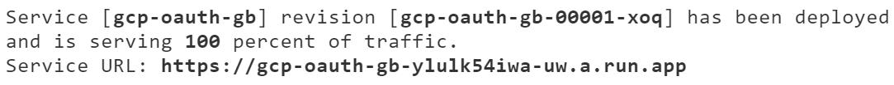
The Guestbook application we have deployed needs to be registered on the identity provider in order to support OAuth authentication. To do so, first visit the "APIs & Services"=>"OAuth consent screen" interface from the cloud console and specify a consent screen to use.
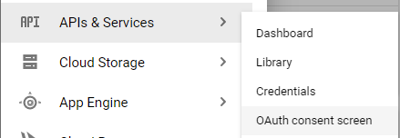
Fill out the application's information: 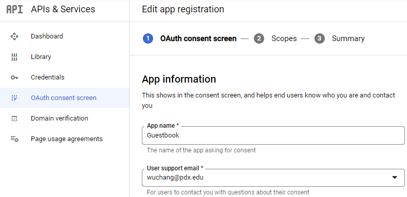
Specify an application home page of https://pdx.edu and an authorized domain of pdx.edu and your pdx.edu e-mail address for your contact information. For an external OAuth application, the authorized domain URL specifies the site that the application is hosted on (e.g. as if we were going to deploy the application at https://pdx.edu/guestbook).
Then continue. Add scopes to enable access to a user's identity information.
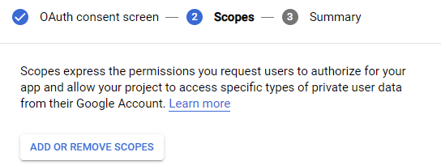
Enable the openid scope which includes the non-sensitive scopes userinfo.email and userinfo.profile.
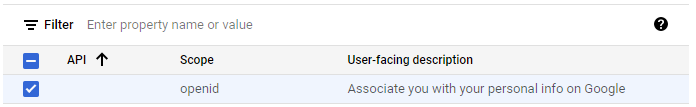
Then, save and continue.
We will now register the application and obtain a client_id and a client_secret with Google. Since we already have a project on Google Cloud Platform, we will use Google as the third-party identity provider for our Guestbook application. Begin by visiting the web console for your cloud project and navigating to "APIs & Services"=>"Credentials" (https://console.cloud.google.com/apis/credentials ) as shown below:
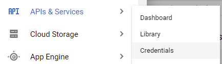
Create a new OAuth client ID.
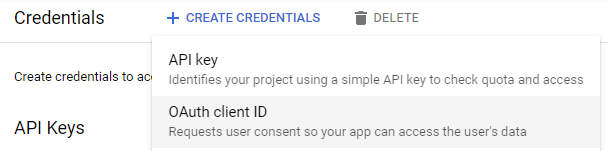
Specify a "Web Application" type and name it "Guestbook". Because we have a traditional client-server web application, we will need to specify a "Redirect URI" (e.g. our Callback URL on the Guestbook). As described earlier, this URI points to a part of our Guestbook application that will receive the OAuth2 one-time code that the user gets from the identity provider upon successfully authenticating.
Based on the Cloud Run URL of your deployment, set the authorized redirect URL to enable its use. (e.g. https://gcp-oauth-gb-ylulk5...a.run.app/callback)
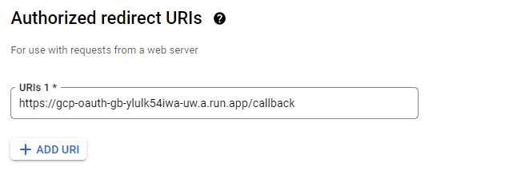
Upon creating the OAuth2 client, keep your Client ID and Client Secret around so you can use them to run the application in later steps.
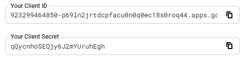
We will now use these three values to configure the environment variables the container needs for setting up OAuth.
REDIRECT_CALLBACKCLIENT_IDCLIENT_SECRETBack in Cloud Shell, we now have the values for the environment variables that will configure the credentials in oauth_config.py to allow OAuth.
Run the following command, filling in the appropriate values for your deployment from the previous step.
gcloud run services update gcp-oauth-gb \
--update-env-vars REDIRECT_CALLBACK=https://...a.run.app/callback \
--update-env-vars CLIENT_ID=923...@...com \
--update-env-vars CLIENT_SECRET=qQycn...h \
--region=us-west1In an Incognito Window, visit the site's URL. Bring up Developer Tools and navigate to the "Network" tab. Then, click on the link to sign the Guestbook. Examine the first two requests in the Network tab by clicking on their "Headers" as shown below:
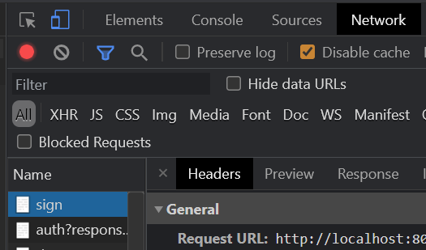
Redirection then brings you to the consent screen in which Google, as your identity provider, asks for your consent to allow the Guestbook application access to your information. Consent grant phishing relies on users mindlessly consenting access to third-party applications.
Keeping the Developer Tools up, authenticate with your PSU e-mail address to complete the consent. Consent will redirect you back to the Callback URL. Click on the Callback URL request in the Network section of Developer Tools
The page that the User is eventually redirected to is shown below:
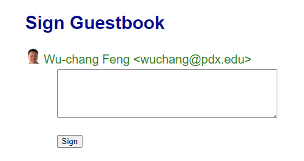
Sign the Guestbook and make sure you've been successfully able to add an entry. Then, click the "Logout" link.
While passing in our CLIENT_SECRET in an environment variable is more secure than placing it in source code or in the container image, placing it in a secrets manager allows one to easily rotate the secret in case it has been exposed. To do so, first remove the environment variable from the deployment using the command below
gcloud run services update gcp-oauth-gb \
--remove-env-vars CLIENT_SECRET \
--region=us-west1Attempt to sign into the Guestbook application again. You should see an error as a result of the CLIENT_SECRET not being set any longer.
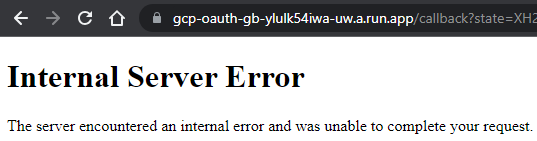
Adapt the command below to create the secret in Secrets Manager with the name client-secret. The command performs an echo then pipes the value into standard input of the gcloud command to create the secret. Since the gcloud command is set up to pull the command from a file, we set the filename to '-' in order to specify standard input.
echo -n "qQycn...h" | gcloud secrets create client-secret --data-file=-Then, allow the Guestbook service account running the service to access secrets stored in Secrets Manager.
gcloud projects add-iam-policy-binding ${GOOGLE_CLOUD_PROJECT} \
--member serviceAccount:guestbook@${GOOGLE_CLOUD_PROJECT}.iam.gserviceaccount.com \
--role roles/secretmanager.secretAccessorFinally, update the deployment to point the CLIENT_SECRET environment variable to client-secret stored in Secrets Manager.
gcloud run services update gcp-oauth-gb \
--update-secrets=CLIENT_SECRET=client-secret:latest \
--region=us-west1Sign in again using a different account and add another entry to the Guestbook.
Giving consent to the Guestbook application to our Google account via OAuth, allows it to access this information from our account until we explicitly remove it. Because adversaries are now using malicious OAuth applications to phish vulnerable users in order to obtain persistent access to their information, we must ensure our account only allows access to applications we are legitimately using.
In order to audit which sites we have given access to our Google account, visit your Google account's permissions at https://myaccount.google.com/permissions. Find the permission you have just given to the Guestbook application as shown below:
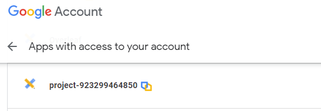
Click on it to expand out its information.
Remove it from your account.
Remove the Cloud Run service.
gcloud run services delete gcp-oauth-gb --region=us-west1Then, delete the container image.
gcloud container images delete gcr.io/${GOOGLE_CLOUD_PROJECT}/gcp_oauth_gbFinally, remove the OAuth client credentials from "APIs & Services"
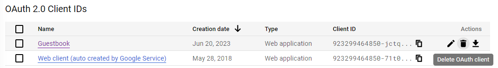